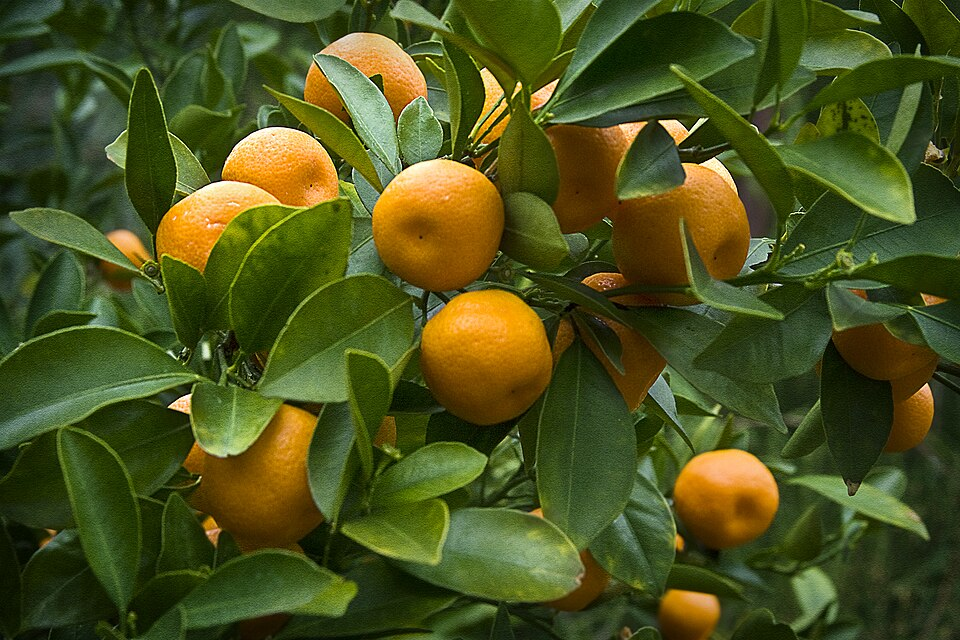

Top 10 Facts About Oranges!
- Orange Trees were first grown in China.
-
In order to get the same amount of fibre as you would from a medium
orange, you’ll need to eat 7 cups of Cornflakes.
- The orange production capital in the world is Brazil.
- Some types of oranges will remain green even after ripening.
-
Orange peel can be reused to remove grease, oil spots and orange tea.
-
Oranges are around 10 thousand times more acidic than the pH of our
blood. Less than lemon juice and more than tomato juice
-
In terms of the history of colors, it’s only recently that the color
orange got its own name. Surprisingly, the fruit came first, originating
in China, and the English word ‘orange’ to describe the color, followed
thereafter.
-
There are now over 600 varieties of oranges worldwide Oranges originates
around 4000 BC in Southeast Asia, and then spread into India
-
The flowers of an orange tree are white in color and have a wonderful
fragrance

Back to home